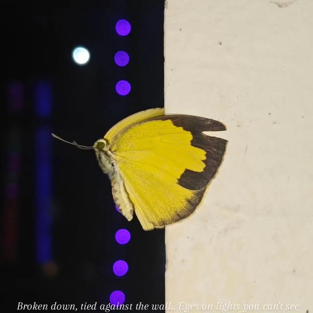
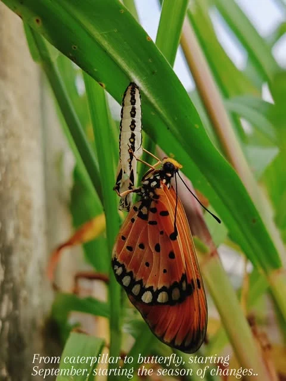
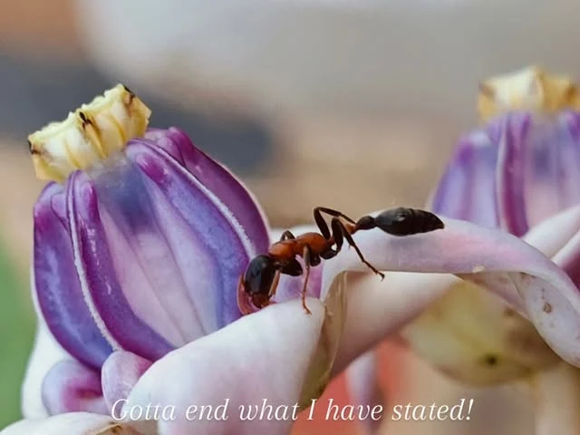
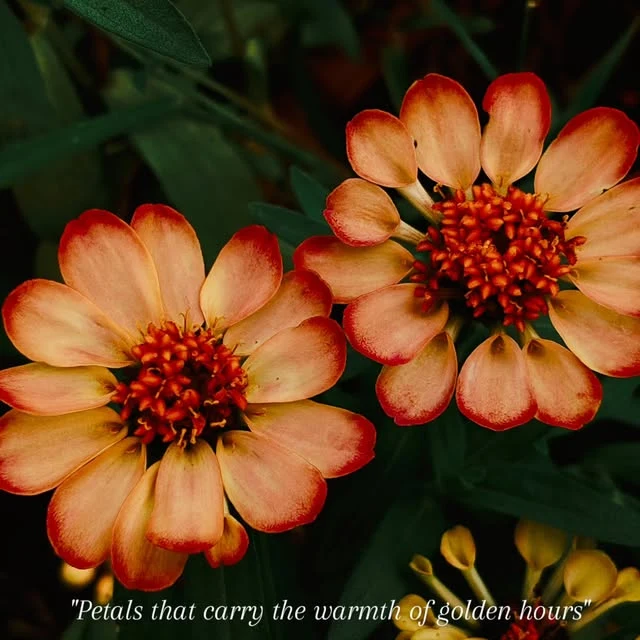
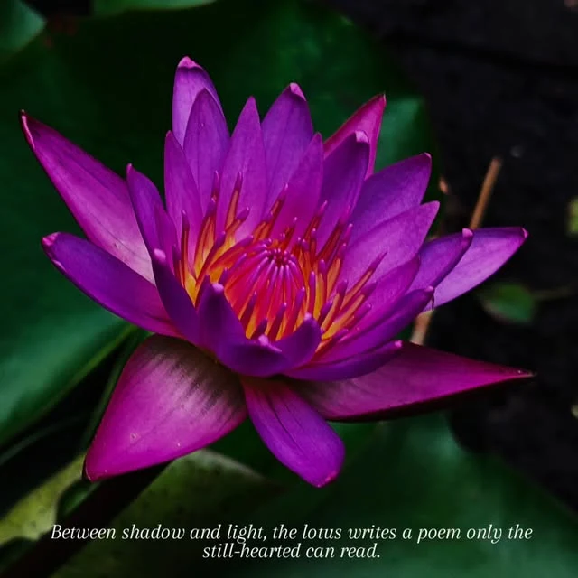

Photographs
My photo journal on Instagram: @partha._.007.

A yellow butterfly rests beside a pale wall, with violet points of light behind it.

Black spots and a pale border stand out on an orange butterfly’s folded wing.

A dark ant follows the curved edge of a pale flower petal.

Two flowers fill the frame, their pale petals edged in orange against dark leaves.

A purple bloom opens around a bright centre against deep green foliage.